عن المشروع
تصوير وجبة، وتصحيح الجزء، وتسجيله.
Bitey (اللوحة سابقًا) عبارة عن سجل للسعرات الحرارية والماكرو يكون مدخله الأساسي عبارة عن صورة. يحدد نموذج الرؤية متعدد الوسائط الطعام الموجود على الطبق؛ فالشخص الذي أكله يصحح الوزن. إن تقسيم العمل هذا ليس أمرًا مريحًا، بل هو جوهر النتيجة التي يرتكز عليها التصميم بأكمله.
تم قياس القياس عبر 145 لوحة من مجموعة بيانات Nutrition5k مع الحقيقة الأرضية الموزونة، وقد ثبت أن التصحيح البشري البصري يستعيد ما يقرب من نصف اكتساب الدقة للمقياس المادي، مما يخلق توازنًا مثاليًا بين الاحتكاك اليومي المنخفض والدقة الغذائية.
يحفظ تطبيق Android، Bitey — سجل طعام خاص، يومياتك على هاتفك، دون حساب ودون خادم يحتفظ بسجلك. أضف الطعام يدويًا أو بالباركود أو كوجبة خفيفة سريعة، وتبقى قياسات الوزن والاتجاهات والنسخ الاحتياطية على الجهاز. ويقرأ Bitey AI، وهو اشتراك اختياري، صورة الوجبة أو وصفًا تكتبه، وتراجع كل تقدير وتعدّله قبل الحفظ.
Bitey على Android
تطبيق Android متاح على Google Play.
أحدث تحديث، 1.1.2، يقدّم قراءة أكثر ثباتًا لما تحرقه: يتأمل Bitey ستة أسابيع من قياسات الوزن ويستند إلى ملفك الشخصي ما دامت الأدلة قليلة، ولا يُحتسب اليوم الحالي حتى ينتهي، ويرسم مخطط الوزن الاتجاه نفسه الذي يعتمده التقدير. لقطات الشاشة من تطبيق Android ببيانات أمثلة مختلَقة.
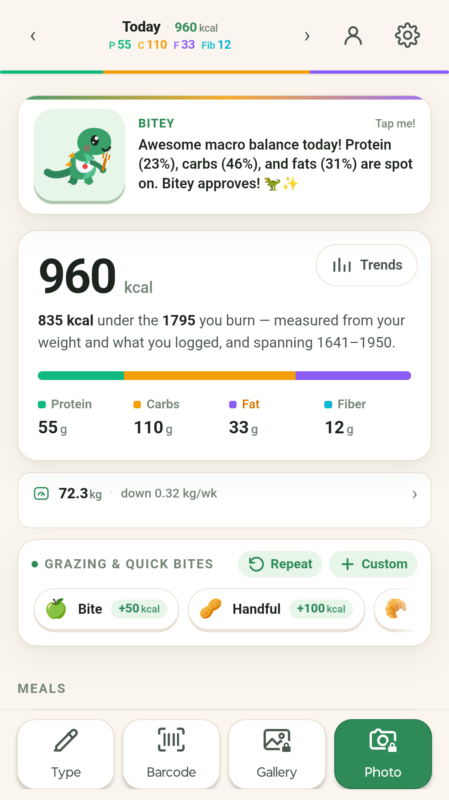
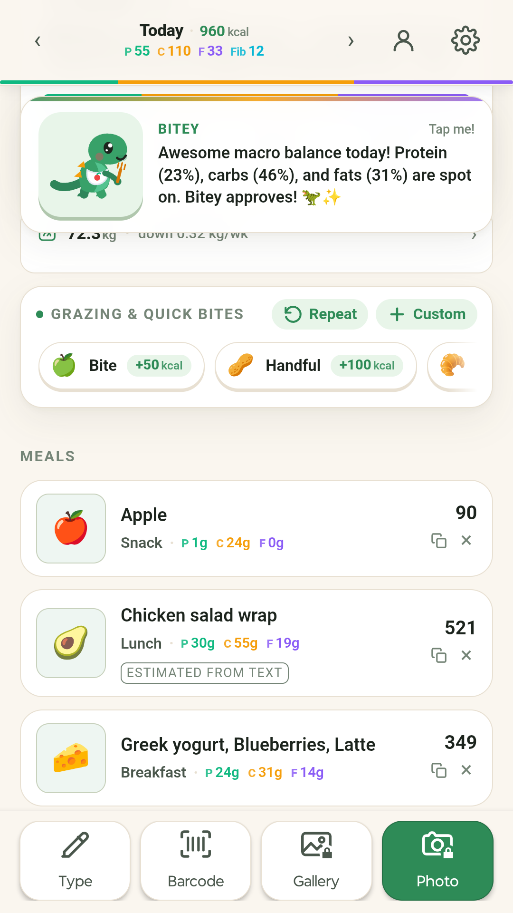
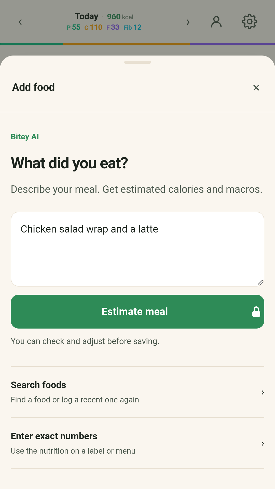
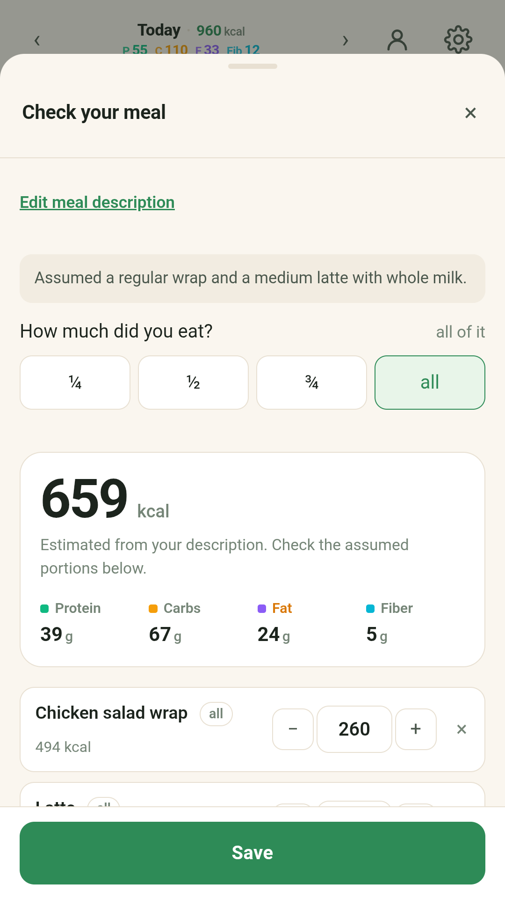
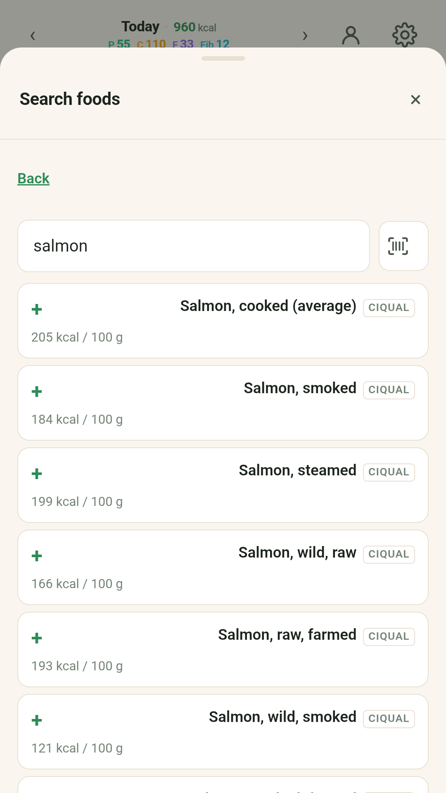
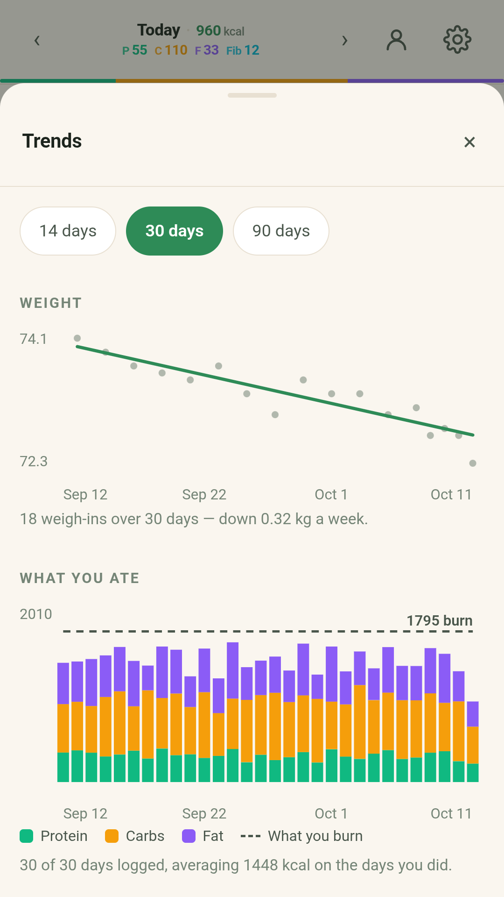
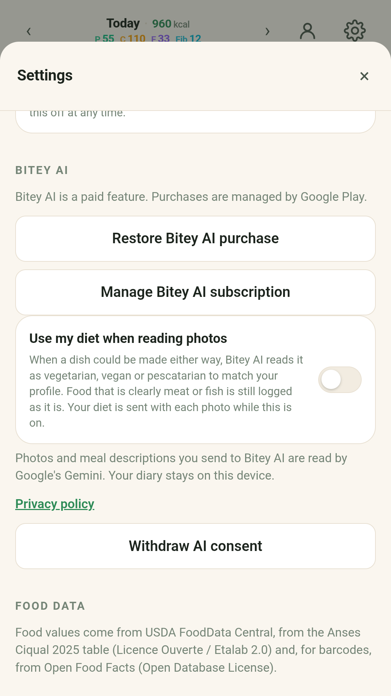
مميزات الاندرويد
- 📏 الاستمرارية أهم من الكمال: سجّل وجباتك بشكل تقريبي لكن منتظم — صورة، بضع كلمات، وجبة خفيفة سريعة — وستتوازن الأخطاء الصغيرة على مدى الأسابيع.
- 🔒 خاص افتراضيًا: تبقى يومياتك وصورك وقياسات وزنك وأطعمة الباركود المخزنة مؤقتًا على هاتفك. لا حساب ولا إعلانات ولا تحليلات.
- 📸 يقرأ Bitey AI صورك: صوّر وجبة، أو اختر صورة من معرضك، واحصل على أطعمتها وحصصها وسعراتها لتراجعها وتحفظها. ويعدّ الأطعمة المتفرقة كالعنب والمكسرات، ويستطيع مقارنة صورة لما تبقّى ليحسب كم أكلت.
- ✍️ أو صِف الوجبة: اكتب ما أكلته فيقدّر Bitey AI السعرات والبروتين والكربوهيدرات والدهون. وتراجع كل طعام وتعدّله قبل الحفظ.
- 🔄 «ليس ما أكلته؟»: أخبر Bitey AI بحقيقة الطبق، فيعيد قراءة الصورة نفسها.
- 🥗 نظامك الغذائي، إن شئت: يسمح إعداد اختياري لـ Bitey AI بمراعاة نظام نباتي أو نباتي صرف أو نباتي مع الأسماك في الأطباق التي قد تُحضَّر بأي من الطريقتين. ويبقى متوقفًا ما لم تشغّله.
- 🔎 طرق مجانية: ابحث في جدول مدمج يضم أكثر من 16,000 طعام، مع أسماء الأطعمة والأطباق الشائعة بلغتك، أو امسح باركودًا، أو اكتب القيم من الملصق، وسيتذكرها Bitey لذلك الباركود. ولا يغادر الباركود الهاتف إلا إذا وافقت على بحث في Open Food Facts.
- ⚖️ قياسات الوزن والنسخ الاحتياطية: سجّل وزنك، وتابع اتجاهات طعامك ووزنك، وأنشئ نسخة احتياطية أو استعد بياناتك عند تغيير الهاتف.
- 💳 اشتراك Bitey AI: يُشترى ويُدار عبر Google Play، والشهر الأول مجاني. يطلب Bitey إذنك قبل أن تغادر أول صورة أو أول وصف هاتفك، ويمكنك سحب ذلك من الإعدادات.
تطبيق الويب
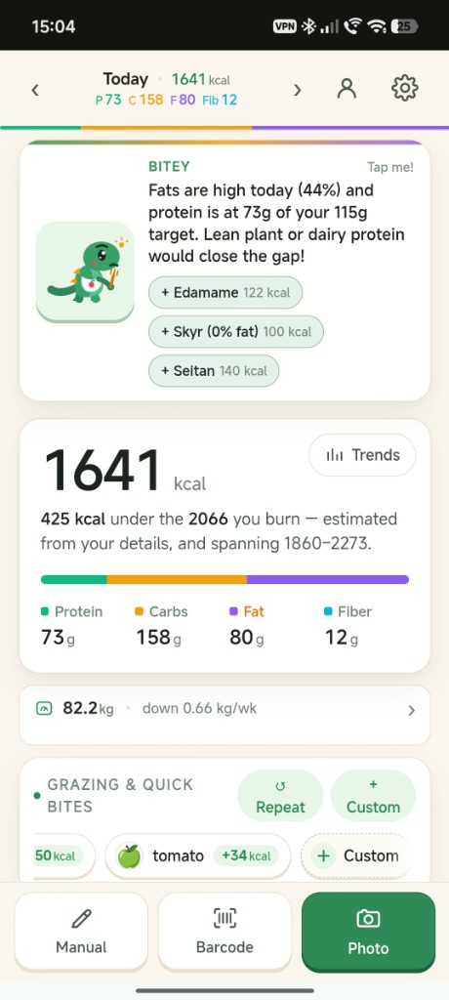
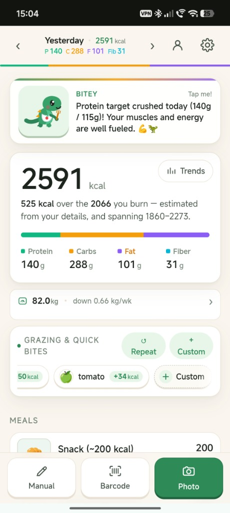
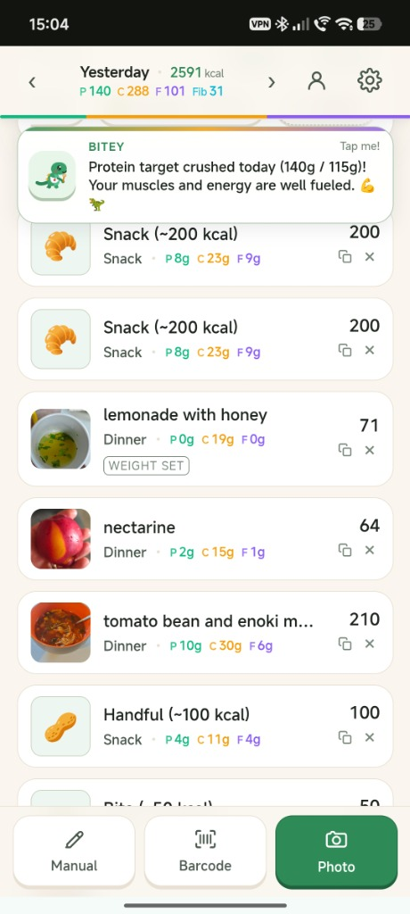
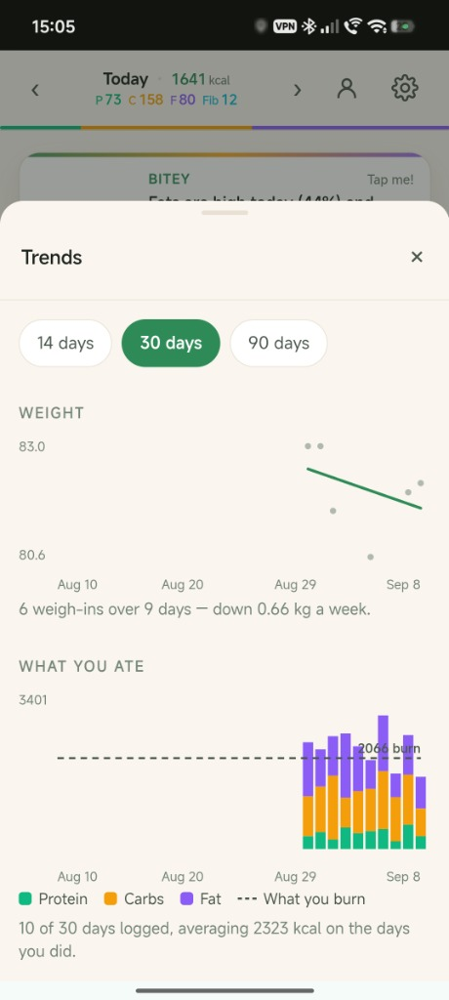
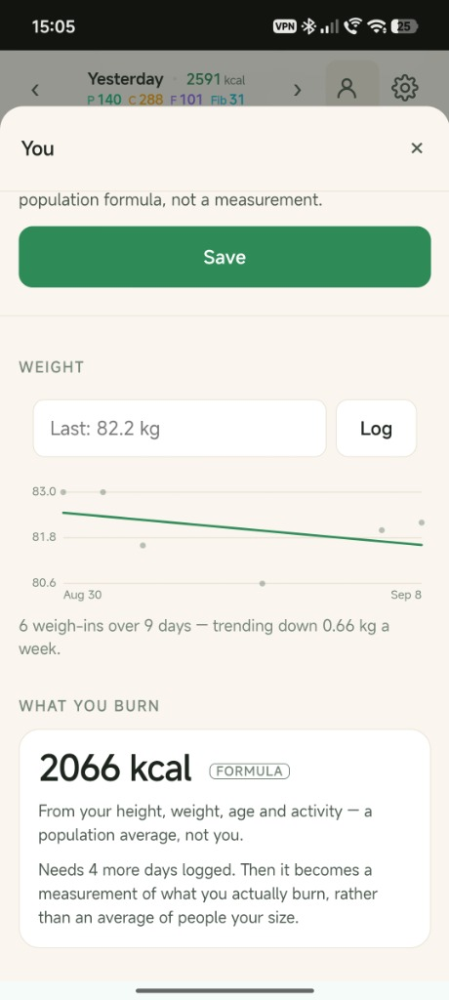
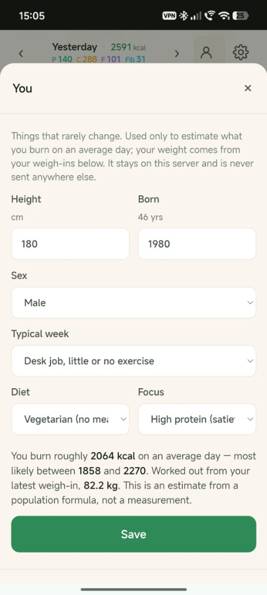
ميزات تطبيق الويب
- 📸 تسجيل الغذاء الرؤية أولاً: التقط صورة ودع نموذج الرؤية يحدد الأطعمة ويتحلل الوجبات المركبة ويقدر التغذية الأساسية على الفور.
- ⚖️ معايرة الجزء التجريبي: نطاقات خطأ شفافة ثلاثية المستويات بناءً على ما إذا كان الوزن قد تم قياسه بالمقياس، أو تم ضبطه بواسطة المستخدم بالعين، أو تم تقديره بواسطة النموذج.
- 🔄 "ليس ما تأكله؟" إعادة القراءة: اذكر ما هو الطبق الفعلي لإعادة تحليل الصورة الموجودة في الذاكرة من الصفر دون التقاط صورة ثانية.
- 🏷️ التحقق من صحة التغذية: الإدخال اليدوي المباشر للوحات المطبوعة أو قوائم المطاعم مع فحوصات سلامة تلقائية مقابل كثافات السعرات الحرارية المستحيلة ماديًا.
- 📊 اتجاهات الطاقة والوزن: تصور تسلسلي زمني يومي كثيف وصادق يتتبع السعرات الحرارية المكدسة بواسطة طاقة المغذيات الكبيرة جنبًا إلى جنب مع اتجاهات الإنفاق في المربعات الصغرى.
- 📦 ملكية البيانات الكاملة والقفل الصفري: تنتج الصادرات الخالية من البوابات JSON، وCSV الجاهزة لجداول البيانات، وأرشيف ZIP مستقل يحتوي على كل صورة للوجبة تم التقاطها.
- 🦖 رفيق التغذية Bitey: رفيق يومي مشجع يحتفل بتحقيق أهدافك من البروتين والسعرات الحرارية من خلال تعليقات شخصية قابلة للتنفيذ.
- 🔒 الميزانية الخاصة والحساب: بنية صفرية تمامًا للقياس عن بعد مع حراس الحصص اليومية المضمنة لكل حساب لضمان تكاليف تشغيلية مستدامة.